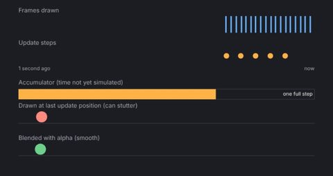
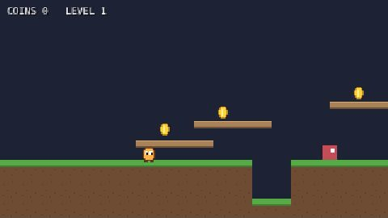
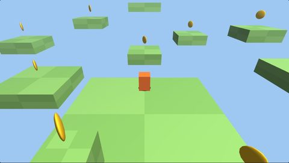

Kindling
Build games from scratch: a zero-dependency 2D + 3D JavaScript game engine, game jam template, and interactive visual lessons.
You opened this page straight from disk (file://). Browsers block JavaScript modules there, so nothing will run. Start a local server instead (see below).
Engine: checking…
Start here
-

Lessons13 lessons in three tracks: 2D, 3D and game design. Each has a live demo, an exercise and a checklist.
-

Samples11 small complete games, 6 in 2D and 5 in 3D. Each is one
main.jsyou can read top to bottom. -
 Visualizations
Visualizations13 interactive pages that show how each engine idea works, with sliders and play/pause.
-
 React demos
React demosA 2D canvas shooter and a 3D platformer in React and react-three-fiber. Python and Rust versions are on GitHub.
-

Jam starterThe game every new jam project starts from. Make your own with
jam/new-game.sh.
Run it locally
mkdir -p ~/projects && cd ~/projects && git clone https://github.com/Normansrule/kindling.git && cd kindling && python3 -m http.server 8000Then open http://localhost:8000/. This site is the same files on GitHub Pages.
More
- DocsArchitecture, one page per module, cheatsheet, glossary
- Python, Rust, React gamesComplete reference games with pygame-ce, macroquad and react-three-fiber
- BridgesThe core ideas in plain Python, React and Rust
- Jam kitChecklists, scope cutter, itch.io upload guide
- TestsMath and collision checks, in your browser
- Hello sampleThe smallest page that loads the engine
- Source on GitHubMIT license. Issues and ideas welcome
Status
Version 1.0.0: all stages (S0 to S8) are done. See the roadmap for what comes after 1.0.